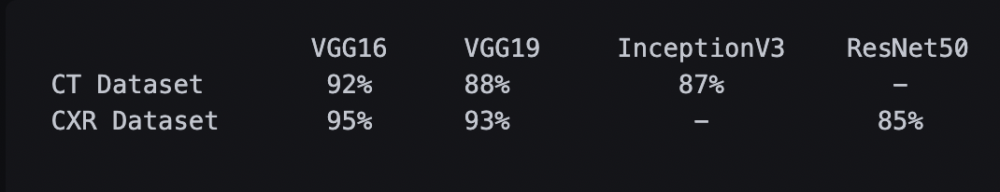

Project information
- Description:App-Based COVID19 detection using CT and XRay images
- Tools: TensorFlow, sklearn, Flask, HTML, CSS, Numpy, Matplotlib
- Code: GitHub Repository
Project Summery
Our goal was to implement a diagnosis system that classifies X-ray and CT images of patient's lungs into 2 categories: Covid and Non-Covid classes
The CNN-based deep neural system is widely used in the medical classification tasks. CNN is an excellent feature extractor, therefore utilizing it to classify medical images can avoid complicated and expensive feature engineering. BUT instead of building a CNN model from scratch, We used pre-trained models and transfer learning to train our model.
Finally we managed to reach a high-precision model for both datasets. you can see accuracies for each model below.
